| StrataVR: A Unity-Based Out-of-Core Pipeline for Interactive Exploration of Multi-Terabyte Volumes in Virtual Reality | | |
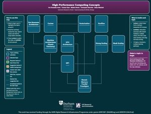 | Interactive Knowledge Graph Supporting Self-Directed and Personalized High Performance Computing Education | | |
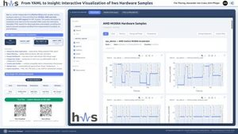 | From YAML to Insight: Interactive Visualization of hws Hardware Samples | | |
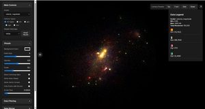 | OpenCosmo Visualization: In-Browser Exploration of Cosmological Particle Data | | |
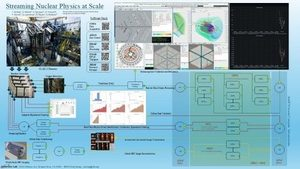 | Streaming Nuclear Physics at Scale | | |
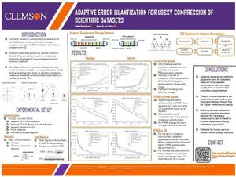 | Adaptive Error Quantization for Lossy Compression of Scientific Datasets | | |
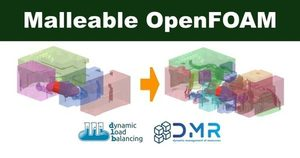 | Malleable OpenFOAM: Communication-Efficient Dynamic Reconfiguration for CFD | | |
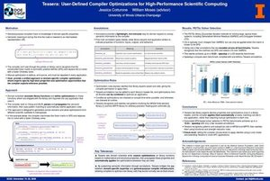 | Tessera: User-Defined Compiler Optimizations for High-Performance Scientific Computing | | |
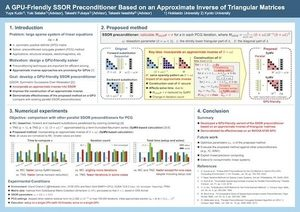 | A GPU-Friendly SSOR Preconditioner Based on an Approximate Inverse of Triangular Matrices | | |
| Scalable Performance Diagnostics on Leadership Computing Platforms | | |
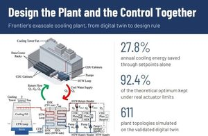 | Design the Plant and the Control Together | | |
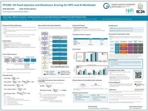 | FFUSE: I/O Fault Injection and Resilience Scoring for HPC and AI Workloads | | |
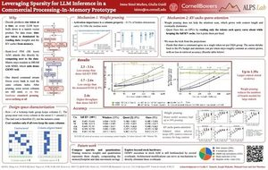 | Leveraging Sparsity for LLM Inference in a Commercial Processing-in-Memory Prototype | | |
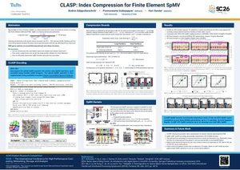 | CLASP: Index Compression for Finite Element SpMV | | |
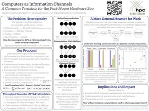 | Computers as Information Channels: A Common Yardstick for the Post-Moore Hardware Zoo | | |
| Runtime Power Feasibility for Small Modular Nuclear Reactor-Powered Datacenters | | |
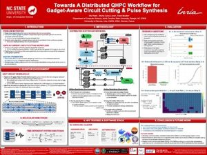 | Towards a Distributed QHPC Workflow for Gadget-Aware Circuit Cutting and Pulse Synthesis | | |
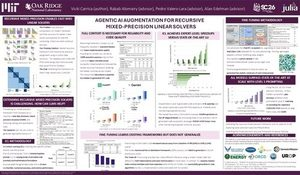 | Agentic AI Augmentation for Recursive Mixed-Precision Linear Solvers | | |
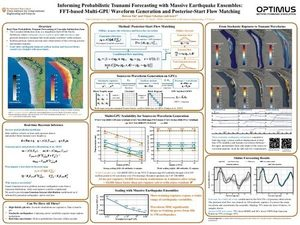 | Informing Probabilistic Tsunami Forecasting with Massive Earthquake Ensembles: FFT-Based Multi-GPU Source-to-Waveform Generation and Posterior-Start Flow Matching | | |
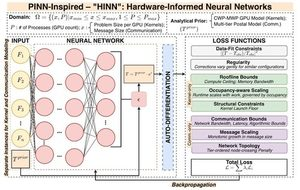 | Learning Within the Laws of the Hardware: Rethinking Multi-GPU Performance Modeling and Workload Characterization | | |
| Cheap Plans, Costly Trades: Host-Device Tradeoffs for SpGEMM on AiM | | |
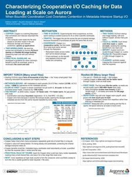 | Characterizing Cooperative I/O Caching for Data Loading at Scale on Aurora | | |
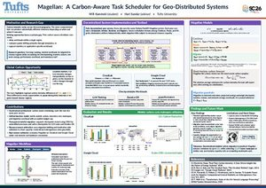 | Magellan: A Carbon-Aware Task Scheduler for Geo-Distributed Systems | | |
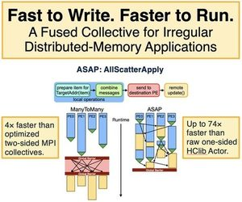 | A Fused Computation-Communication Collective for Irregular Distributed-Memory Applications | | |
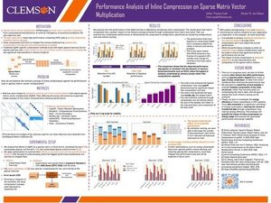 | Performance Analysis of Inline Compression on Sparse Matrix Vector Multiplication | | |
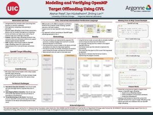 | Towards Verifying OpenMP Target Offloading | | |
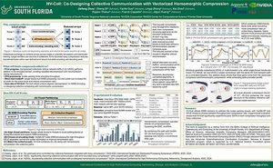 | HV-Coll: Co-Designing Collective Communication with Vectorized Homomorphic Compression | | |
| Hall Pass: Per-Action Authorization for Shared Agents | | |
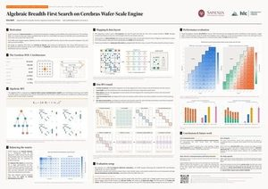 | Algebraic Breadth-First Search on the Cerebras Wafer-Scale Engine | | |
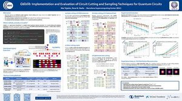 | Qdislib: Implementation and Evaluation of Circuit Cutting and Sampling Techniques for Quantum Circuits | | |
| Impact of GPU Multistreaming on Task-Based DAG Execution in Dagger.jl | | |
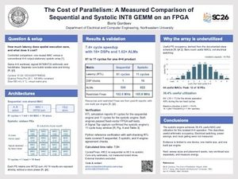 | The Cost of Parallelism: A Measured Comparison of Sequential and Systolic INT8 GEMM on an FPGA | | |
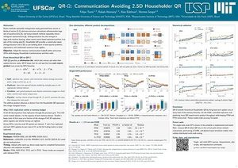 | QR-Omega: Communication Avoiding 2.5D Householder QR | | |
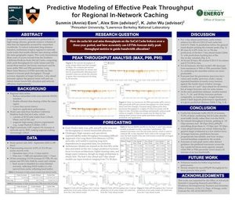 | Predictive Modeling of Effective Peak Throughput for Regional In-Network Caching | | |
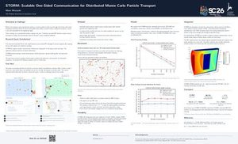 | STORM: Scalable One-Sided Communication for Distributed Monte Carlo Particle Transport | | |
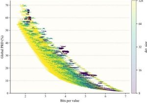 | Transit-Layer Tensor Representation for Serverless Inference | | |
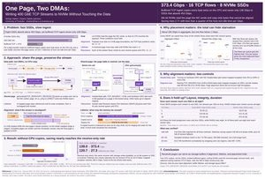 | One Page, Two DMAs: Writing 400 GbE TCP Streams to NVMe Without Touching the Data | | |
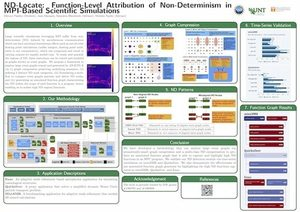 | ND-Locate: Localizing Non-Determinism in MPI Applications | | |
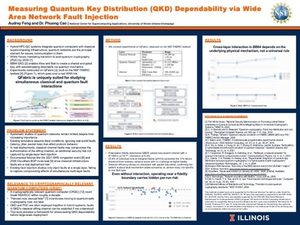 | Measuring Quantum Key Distribution (QKD) Dependability via Wide Area Network Fault Injection | | |
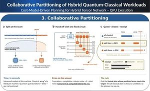 | Collaborative Partitioning of Hybrid Quantum–Classical Workloads: Cost-Model-Driven Planning for Tensor-Network/QPU Execution | | |
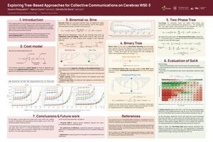 | Exploring Tree-Based Approaches for Collective Communications on Cerebras WSE-3 | | |
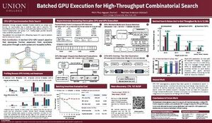 | Batched GPU Execution for High-Throughput Combinatorial Search | | |
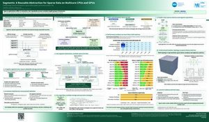 | Segments: A Reusable Sparse-Data Abstraction for Multicore CPUs and GPUs | | |
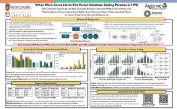 | When More Cores Hurts: The Vector Database Scaling Paradox in HPC | | |
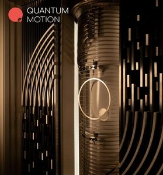 | A Cloud Accessible Four-Qubit Electron Spin Quantum Processor in a 300 mm Metal-Oxide-Semiconductor Process | | |
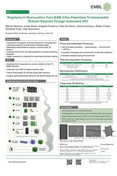 | Megabytes in Murmuration: From 8-MB X-Ray Projections to Interpretable TB-Scale Structure Through Automated HPC | | |
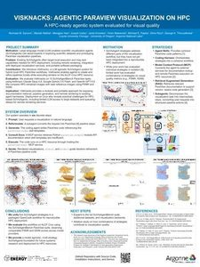 | VisKnacks: Agentic ParaView Visualization on HPC | | |
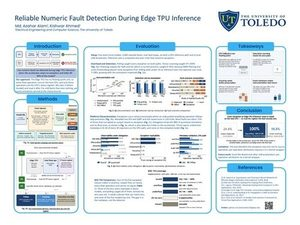 | Reliable Numeric Fault Detection During Edge TPU Inference | | |
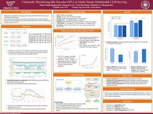 | CoEncode: Reclaiming Idle Encoder GPUs in Multi-Tenant Multimodal LLM Serving | | |
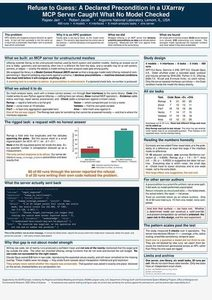 | Refuse To Guess: A Declared Precondition in a UXarray MCP Server Caught What No Model Checked | | |
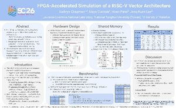 | FPGA-Accelerated Simulation of a RISC-V Vector Architecture | | |
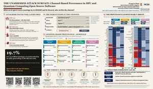 | The Unassessed Attack Surface: Channel-Based Provenance in HPC and Quantum-Computing Open-Source Software | | |
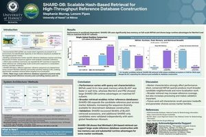 | SHARD-DB: Scalable Hash-Based Retrieval for High-Throughput Reference Database Construction | | |
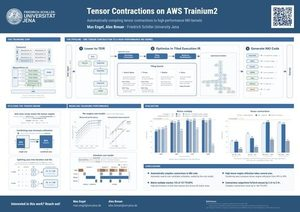 | Tensor Contractions on AWS Trainium | | |
| Characterizing Scaling Performance of LLM Inference on GPU-Based Supercomputers | | |
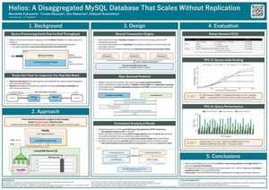 | Helios: A Disaggregated MySQL Database That Scales Without Replication | | |
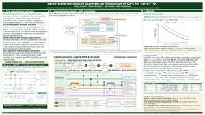 | Large-Scale Distributed State-Vector Simulation of IQPE for Early-FTQC | | |
| TEIR: A Tiled Execution IR for Tensor Contractions | | |
| From Millions to Billions: Scaling Explicit Red Blood Cell Modeling on Exascale Systems | | |
| Energy-Efficient Coupled Simulations with Dynamic Voltage and Frequency Scaling | | |
| A Model‑Agnostic Orchestration Engine for Multi‑Stage High-Performance Scientific Workflows | | |
| Union of Containers: Layered Software Stacks with Cross-Container Dependency Reuse for HPC | | |
| HPC and AI Water Usage: Findings From 11 Leading Supercomputing Centers | | |
| Bridging the Semantic Gap in Long-Term Agent Memory Retrieval | | |
| Load Balancing and Communication Bottlenecks in SpMV on the Cerebras WSE-3 | | |
| OpenEvolve-Driven Selection and Tuning of Ozaki-Scheme GPU Matrix Multiplication | | |
| ParslBox: Computational Materials Workflow Executor for AI Agents on High Performance Computing Systems | | |
| Understanding AllReduce Performance Through Hardware Telemetry | | |
| Fully GPU-Accelerated Distributed Full Configuration Interaction Beyond Trillion-Determinant Scale | | |
| Trustworthy Agentic AI for HPC Operational and Predictive Data Analytics and Forecasting | | |
| Kamo: Bringing Many-Core Scalability to MySQL | | |
| Tensor Compilers for AI and HPC | | |
| OptimasX: An Agentic End-to-End GPU Performance Optimization Workflow in the Code Editor | | |
| Faster Biobank-Scale Genomics Through Sparse Linear Algebra on Genotype Representation Graph | | |
| Chemically Accurate End-to-End Classical Simulation of Qubitization-Based Quantum Phase Estimation on 1,024 GPUs | | |
| CADI: Semi-Automatic Insertion of Host-Device Data Transfer Directives Based on Code Analysis | | |
| Field-Preserving Gaussian Splatting for Interactive Visualization of Large-Scale Cosmological Simulations | | |
| A-OASIS: Building an AI-Coupled Atmosphere-Ocean Foundation Model | | |
| Skyway My Way! InfiniBand to Ethernet Optimization and Benchmarking | | |
| Analyzing the Impact of Architectural Design Decisions on Performance Across Generations of NVIDIA GPUs | | |
| Benchmarking AI Vector Databases for Genesis Mission | | |
| Adaptive Orchestration of Heterogeneous LLMs with Dynamic Escalation for Multi-Agent Collaboration | | |
| Performance-Portable GPU Acceleration of the Hybrid PIC Code dHybridR | | |
| Structure-Aware Linear Solvers for Matrix-Free High-Order Finite-Element Simulations on GPUs | | |
| Accelerating Materials Discovery with ADAM: An AI Co-Pilot for Physical Experimentation | | |
| Proposal of a Transparent Dynamic Core Allocation Method for MPI/OpenMP Hybrid Parallelization | | |
| Extending I/O Observability to Explainability for Targeted Optimization | | |
| ToolFuse: Provenance-Aware In-Flight Coalescing of Redundant Agent Tool Calls | | |
| Continental-Scale, High-Order, High Spatial-Resolution Ice Flow Modeling Based on Graphics Processing Units (GPUs) | | |
| FBench: A Flexible Benchmark for CFG-Based What-If Exploration of HPC I/O Patterns | | |
| JUNIQ Benchmark Suite: A Decade of Application Benchmarks on Quantum Computers | | |
| Evaluating All-Reduce Operations in DDP Training with FABRIC: Framework for Architecture, Backend, and Reduction Interchange Comparison | | |
| A Viskores-Enhanced Vision Transformer Framework for MRI-Based Cancer Image Classification on Frontier | | |
| Building an HPC User Documentation Process Via Layers of Writing Infrastructure | | |
| A Physics-Informed AI Architecture for One-Dimensional Turbulence Modeling | | |
| GNNs Beyond HBM: Compressed, Bit-Exact Feature Streaming for Out-of-Core Training | | |
| BFS-FAR: Fragmented Asynchronous Breadth-First Search on UPMEM Processing-in-Memory | | |
| Pumped Two-Phase Cooling for the Next-Gen Chips with Heat Flux Over 4 W/mm2 | | |
| A Taxonomy of Application Properties for Mixed-Precision Autotuning | | |
| DPGraph: Code Optimization with Dynamic Program Graphs Using Heterogeneous GNNs | | |
| AI for Quantum at the Quantum Science Center: Towards Building a Connective Layer Across the Quantum Computing Stack | | |
| A Hybrid Quantum-Classical Framework for Solving Computational Fluid Dynamics and Nuclear Physics Equations Using Quantum Singular Value Decomposition and Transformation | | |
| Automated Isolation of Vulnerable Workloads | | |
| Early Lessons From Characterizing Unified CPU-GPU Memory on DGX Spark | | |
| Optimizing HPC Performance for CDC-Based Storage and Reconstruction of High-Resolution Imagery | | |
| Completion-Driven, Staging-Free AlltoAllv with Local-NIC Balancing | | |
| Nexus: Malleable Physical Infrastructure for Dynamic Workload Convergence | | |
| E-dLLM: Energy-Efficient Diffusion LLM Inference via Phase-Aware DVFS | | |
| Digitizing the Chicago Assyrian Dictionary: Accelerating Document Analysis with VLMs and HPC Infrastructure | | |
| VLIW Scheduling: Timing Is All You Need | | |
| OpenCCL: A Proposed Open Standard and Reference Implementation Unifying *CCLs for Performance, Portability, and Productivity | | |
| Plexus-v2: Extreme-Scale GNN Training with Communication-Free Sampling and 4D Hybrid Parallelism | | |
| Mallet: An Open-Source Formal Verification Flow for Agile Domain-Specific Accelerator Development | | |
| Useful Data, Not Just More Data: Cost-Aware Floating Car Data Generation in Large-Scale Traffic Simulation | | |
| Bigger Networks, More Trajectories: Scaling Exact Stochastic Simulation on GPUs Through Sparse Storage and a Warp-ary Propensity Tree | | |
| A Naive D3Q27 Lattice Boltzmann Implementation on the Cerebras CS-3: Comparison with GPUs | | |
| Breaking the Chain: Geometry-Native State Preparation with ASPIRE | | |
| How the NERSC User Community Connects | | |
| Cache-Driven Super-Linear Scaling in a Python Fluid Solver | | |
| GenASPEN: Agentic AI for Automatic Performance Modeling of HPC Codes | | |
| APQF: Agentic Profiling-Guided Structured Pruning and Mixed-Precision Quantization with Adaptive Fine-Tuning | | |
| Resource Adaptivity in the GPTune Autotuning Framework | | |
| High-Performance Star-M SVD for Big Data Compression | | |
| A Linear-Scaling, Sparse Matrix Electronic Structure Solver on the Cerebras Wafer-Scale Engine | | |
| Training-Free Mixture-of-Agents for CUDA Kernel Translation and Optimization | | |
| StageOnce: Speculative Cross-Job Data Staging for LLM Agent Fleets | | |
| Energy and Carbon Footprint of the x3d2 CFD Solver on AI-First and HPC-Class GPUs | | |
| GIFT: Geometry-Informed Low-Precision Gradient Communication for LLM Pretraining | | |
| Agents of Intelligence: Lowering the Barrier to AI for Domain Scientists | | |
| MATCH: Multimodal Alignment Through Contrastive Learning of Heterogeneous Sensor Streams at Static Nodes | | |
| Data-Driven GPU Performance Model for Molecular Dynamics in Computational Drug Discovery | | |
| An MLIR Dialect for Fault-Tolerant Quantum Computing | | |
| Correlation-Aware Uncertainty Visualization of Multivariate Data with Many-Core Acceleration | | |
| Drava: An Event-Driven Runtime for Scientific Pipelines with Agentic Configuration Optimization | | |
| Toward HEPScore4GPU: Scaling and Power of Real HEP GPU Applications on the A100 and H100 | | |
| A Side-Channel Methodology for DL Model Recovery Using Power Traces | | |
| Characterizing GPU Performance in AI Inference with Power Metrics | | |
| A Multi-Phase GPU Pipeline for Biconnected Components | | |
| Understanding and Improving Multi-Rack Symmetric-Memory AllGather in NCCL | | |
| Sparse Matrix-Vector Multiplication on Cerebras WSE-3 | | |
| Communication Strategies for Wafer-Scale Iterative Solvers | | |
| Do AI Workloads Fail Differently? A Cross-Cluster Characterization of Failure Types in AI and HPC Systems | | |
| QoS Coverage Maps for Placement and Readiness in Urgent Digital Twins | | |
| Online Load Balancing of High-Order Mixed-Element Simulations on Heterogeneous Architectures | | |
| Scalable OpenCHAMI Node Infrastructure Collection (SONIC) | | |
| Query-Driven Visualization Over Compressed Scientific Data via Data–Index Co-Compression | | |
| Understanding the NERSC User Community Through Network Analysis | | |
| Performance Analysis of Phaseless Auxiliary Field Quantum Monte Carlo | | |
| A Distributed Mixed-Precision N-Body Engine: Scaling Behavior and the Precision Limits of a Direct-Summation Kernel | | |
| K2S-Gate: A Secure Kubernetes-to-Slurm Gateway with Unified Service Catalogs for Web-Based AI and HPC Applications | | |
| From Microbenchmarks to LLM Inference: An End-to-End Analysis on the Energy Efficiency of the Grace Hopper Superchip | | |
| Performance Evaluation of a Heterogeneous CPU-GPU Framework for Real-Time ECG Analytics | | |
| Exploring the Performance Portability of Modern Programming Languages | | |
| Diamond Agent: Agentic Control of Federated HPC Resources as a Service | | |
| PERNIX: High-Throughput SIMD Floating-Point Compression | | |
| VisionHPC: AI Generation of Expert-Level HPC Codes From High-Level Mathematical Abstractions | | |
| Data Layout and Differentiation for Efficient Training of Physics-Informed Deep Operator Networks | | |
| HARD: Leveraging FleCSI for Heterogeneous Multi-Material Hydrodynamics | | |
| Revisiting Distributed Particle-Based Volume Rendering on Fugaku and Beyond | | |
| Measurement Error for CPU Performance Counters | | |
| Towards Scalable and Efficient Deep Learning: Structured Optimization Across Training and Fine-Tuning | | |
| Finite-Element Methods and Exascale Algorithms for Fully Relativistic Noncollinear Pseudopotential Density Functional Theory: From Mathematical Formulations to Efficient Computational Realization and Magnetic Materials Applications | | |
| Embrace the Chaos: Harnessing Variability in Accelerator-Rich Systems | | |
| Near-Real-Time Performance Visualization of MPI Applications: Integrating Performance Analysis Into HPC Education | | |
| Towards Resource-Efficient Parallel Concept Drift Detection in Data Streams | | |
| Machine Learning-Based Multi-Objective Optimization for HPC Workload Scheduling | | |
| One-Sided: A Portrait of the New OpenSHMEM Standard | | |
| Fatal Attraction | | |
| Portrait of Data Center | | |
| 2011 Tōhoku–Oki Earthquake and Tsunami: Dynamic Rupture and Acoustic–Gravity Simulations | | |
| An Exascale Universe in Warm and Cool | | |
| JASMIN in July (Per Day): Brownian Bouquet | | |
| Entropy on the Edge of Collapse | | |
| Oil on Canvas: Galactic Center on Palette | | |
| Simulation of Tungsten Transport in the ASDEX-U Tokamak Plasma | | |
| Open Polarity | | |
| Flow Through a Pebble-Bed Reactor in NekRS | | |
| Fulfillment: Artistic Encounters with the Hidden Labor and Environmental Footprint of High Performance Computing | | |
| Biological Interfaces | | |
| Spiral Wave: The Heart's Chaotic Dance | | |
| Antarctica: Looking Through the Ice Into the Past | | |
| Morphogenesis | | |
| Vortex Bubbles in Anabatic Upslope Flow During Morning Transition | | |
| Boiling the Ocean ... Literally | | |
| Radiation: When Steels Fall Apart | | |
| Ligand Dynamics Control Structure, Elasticity, and High-Pressure Behavior of Nanoparticle Superlattices | | |
| Colourful Wind Assistance | | |
| JASMIN in July (Per Hour): Stochastic Sea | | |
| Where Data Becomes Light: The Beauty of Scientific Visualization | | |
| The Oracle at DKRZ | | |
| You Only Have Seven Seconds | | |
| A Study of 4D Julia Sets: Iterations of Z = Z2 + K in the Quaternions | | |
| INSTRUMENT | One Antarctic Night | | |